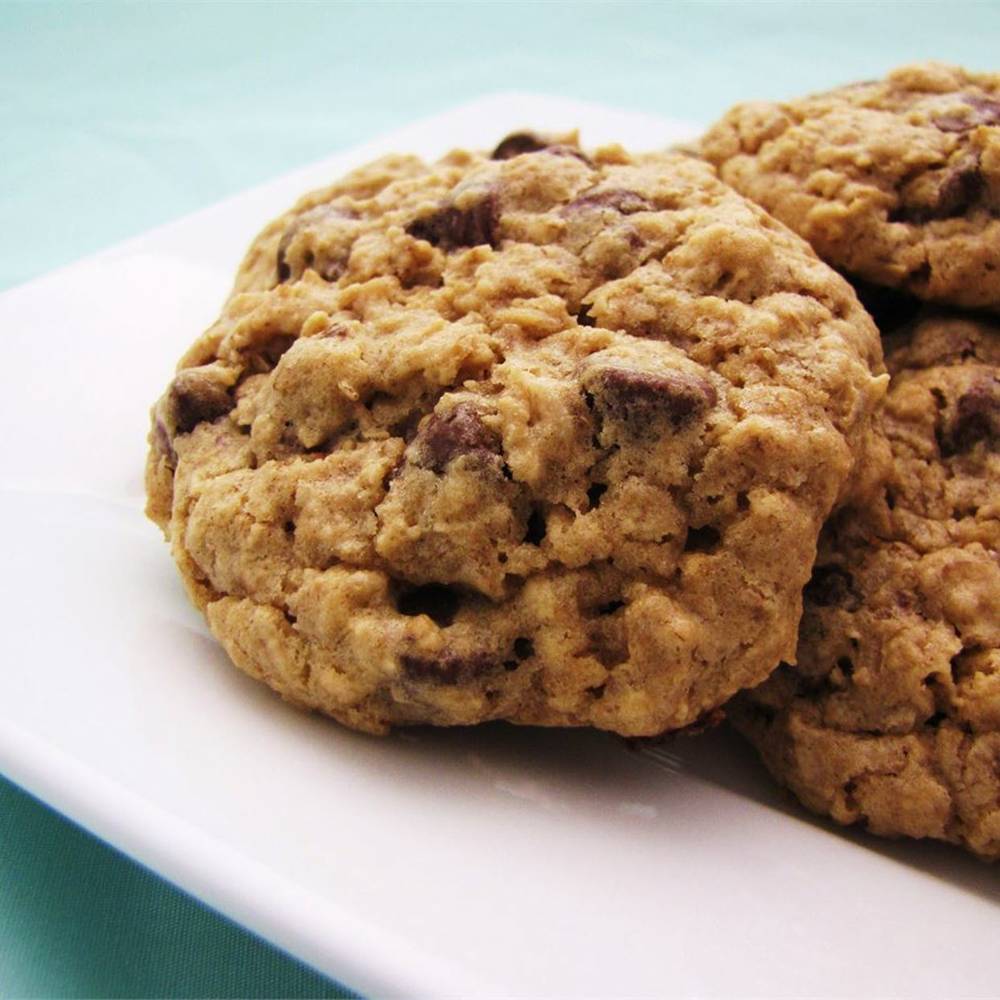

Cookies

Description
I modified Beatrice's Excellent Oatmeal cookies very slightly. I came up with something that my boyfriend went CRAZY over! I've never seen him enjoy cookies to that extent! He said I blew his mother's recipe away.
Ingredients
- 1 cup butter
- 1 cup brown sugar
- 0.5 cup white sugar
- 2 eggs
- 2 teaspoons vanilla extract
- 1.25 cups all-purpose flour
- 0.5 teaspoon baking soda
- 1 teaspoon salt
- 3 cups quick-cooking oats
- 1 cup chopped walnuts
- 1 cup chocolate chips
Steps
- Preheat the oven to 165 degrees C.
- In a large bowl, cream together the butter, brown sugar, and white sugar until smooth. Beat in eggs one at a time, then stir in vanilla. Combine the flour, baking soda, and salt; stir into the creamed mixture until just blended. Mix in the quick oats, walnuts, and chocolate chips. Drop by heaping spoonfuls onto ungreased baking sheets.
- Bake for 12 minutes in the preheated oven. Allow cookies to cool on baking sheet for 5 minutes before transferring to a wire rack to cool completely.
Back